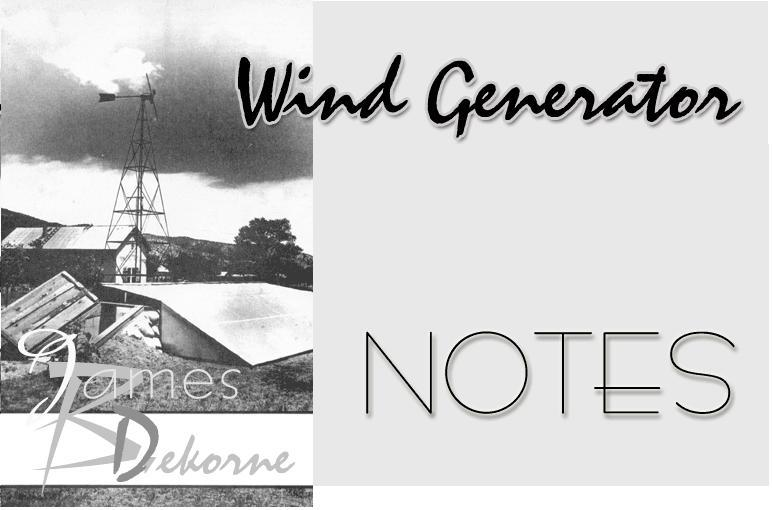
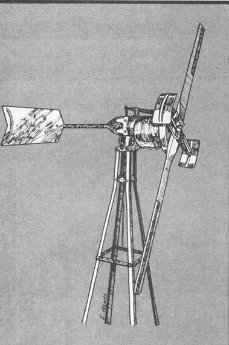
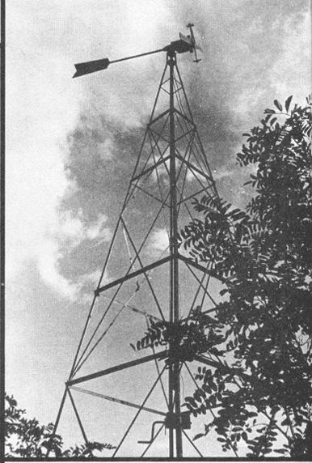

In the first two articles of this series (Mother Earth News, no.s 28 and 29), I described my initial experiences with the experimental underground hydroponic greenhouse and aquaculture tank I've built on my New Mexico homestead. Almost a year has now passed since the greenhouse proper was completed, and nearly six months since the small wind generator and solar panel were installed to complete the system. It's really too soon to pronounce the venture a total success, though I can confidently state that it certainly isn't a total failure! The real proof of the pudding will come this winter when the greenhouse will be tested for the first time with all its components in full operation.
As you'll remember from earlier installments, the greenhouse was conceived of as a mini-ecosystem, a self-contained food production unit which takes maximum advantage of nature's law of recycling. Looked at in terms of alchemy's primary elements-earth, air, fire and water-the setup is an attempt to integrate all four into a harmonious whole: The earth insulates the structure, and air (wind) generates electricity to pump water through a solar panel where it's warmed by the fire of the sun.
Very early in the planning of the project, I began to envision it as a prototype which, if successful, could easily be reproduced by anyone with a minimum of mechanical aptitude. After all, if an underground greenhouse and aquaculture tank was to serve as a potential solution to part of the world's food problem, it would have to be designed so that people from non-technical cultures could construct and operate the system without a great deal of training or supervision. This should be quite possible: While the concepts of the ecosystem are different from traditional food-production methods, there's really nothing in the idea that requires a highly sophisticated technology (or a highly sophisticated technologist).
Perhaps the most "complicated" part of my system is its windelectric component. The wind generator is used as a power source to pump the fish tank water for aeration and filtration, and to absorb heat from the solar collector. The first two functions keep the fish healthy, the third warms the greenhouse at night.
In choosing a generator I was confronted with a very important decision. I could have used any one of the several big, old Jacobs or Wincharger machines (which are no longer manufactured) that I scrounged from farms out on the plains (see my article in Mother Earth News, no. 24), but I ruled out this choice for two reasons: Such relics are [ 1 ] now so rare that most people wouldn't be able to find one and (2) really much too large and powerful to use just for circulating water in a fish tank.
I also could have built a small wind generator of my own design from automotive components. It would have served my purpose very well. I decided not to do so, however, because-while I have the tools and mechanical background to construct such a device, there are plenty of people who don't, and if the ecosystem was to be of maximum immediate benefit to anyone, it would have to be quickly and easily constructed. Anyway, that was the drift of my thinking during the planning stage.
I finally decided to design my ecosystem around the only readily available wind generator still manufactured in the United States: the Model 1222-H Wincharger. This 12-volt, 180-watt machine from Dyna Technology, Inc., P.O. Box 3263, Sioux City, Iowa 51102. I purchased mine in December 1973 for just under $400.
Before any of my fellow alternative energy enthusiasts get too upset, let me hasten to admit that 180 watts is a fairly small amount of power for which $400 is a fairly large amount of money. For an equivalent cash outlay a mechanically adept individual can construct a machine capable of an output two or three times greater (see "I Built A Wind Charger for $400!" by Jim Sencenbaugh in Mother Earth News, no. 20). Or, with even less money and skill, one can build an S-rotor generator significantly more powerful than my Wincharger. (See Michael Hackleman's article "The Savonius Super Rotor" in Mother Earth News, no. 26, and be sure to note the additions and corrections in no.s 27 and 28.)
Now I must admit that I like a challenge, and to get the most from only 180 watts of electricity is certainly that. At its maximum output my windplant will light only one 100-watt and one 80-watt bulb, not very impressive from the viewpoint of the average American consumer, who measures his use of electricity in increments of 1,000 watts. (One thousand watts equals one kilowatt, the block of energy from which Reddy Kilowatt takes his name and upon which he bases your electric bill each month.)
The specifications for the 1222-H Wincharger state that it will produce 20 kilowatt hours (kwh) of electricity per month in areas with an average windspeed of 10 mph. "Kilowatt hour" is merely a term used to describe the use of a given unit of electric power (one kilowatt) in relation to a given unit of time (one hour). Thus, 1,000 watts used for one hour is equal to 1 kilowatt hour, 500 watts used for two hours still adds up to 1 kilowatt hour, as does one watt for 1,000 hours or 2,000 watts for one-half hour.
If my Wincharger will produce 20 kwh of power over a period of one month (assuming we get winds that average 10 mph), then I could theoretically utilize 1,000 watts for 20 hours or even 20,000 watts for one hour. In reality, given the limitations of my batteries, I can expect to draw 50 watts an hour for 12 hours a day, 30 days a month. Based on those figures, I should be able to realize 600 watt-hours a day (50 X 12 = 600) and 18,000 watt-hours (18 kwh) per month (600 X 30 = 18,000). Eighteen kwh is well within the 20-kwh limitation of my windplant, so ideally the 1222-H Wincharger is easily capable of handling the demand I want to put on the unit. At least, that's the way it worked out on paper when I made my plans.
In late April of 1974 (after I'd constructed a 25-foot tower out of 1-1/2-inch angle iron and set the structure's foundation posts in concrete) the generator was ready for installation. It was a cold, gray and very windy morning when 15 friends showed up to help raise the tower. I seriously considered postponing the attempt until conditions were more favorable, but everyone was primed for the event, and we went ahead despite occasional gusts in excess of 50 mph. (Spring is so windy here that the only "safe" postponement would have been until late June or July.)
Our luck held: The tower-raising (with the generator in place) went very smoothly. The angle-iron framework was propped against the back of my pickup, and two lines were tied on either side, perpendicular to the tower's axis, with several people holding tightly to the free ends. (This was to steady the weight and prevent the structure from falling to the right or left as it was being raised.) Several strong men stood in the bed of my truck and pushed the tower up hand over hand as I slowly backed the pickup toward the foundation posts.
As soon as the tower was vertical it was quickly bolted to its concrete base and the power unit's wires connected to the batteries. Then the brake was released and . . . wow, what a sight! The generator began turning immediately and, before we could think about it, started to "govern" in the strong wind. I ran into the greenhouse to check the ammeter and found it registering in excess of 10 amps. It was a real thrill: The system worked!
All that day and for the next few weeks I did little but stare at the whirling prop of my generator. When the winds were particularly strong (which was most of the time), the air-brake governor was in full operation with a loud roaring noise that sounded like a B-29 taking off. There were times when I cringed, thinking surely the wind would destroy the tiny plant or at the very least shatter the prop into toothpicks, but it held together. It's holding together today, and I'm very much impressed with its durability and performance. If you don't need any more than 180 watts, the 1222-H Wincharger is a fine machine.
But does a 180-watt wind generator provide enough power to keep my two Gould PB 220 6-volt golf-cart batteries (hooked in series to make 12 volts) charged enough to handle the load I put on them? The setup hasn't been in operation long enough for me to give a definite answer to that question.
Let's just say that I have my doubts. To understand why my calculations from the planning stage don't seem to fit the realities of the working system, we have to examine two important factors: average windspeed and the amount of load put on the batteries.
Ideally, before installing any wind electric system, one should take careful measurements with an anemometer to determine the average windspeed for the area in which the installation is being made. In actuality, few people do this. The more sophisticated anemometers are relatively expensive instruments, and the inexpensive, hand-held models require the dedicated observer to go out when the wind is blowing, climb to some high and unobstructed "platform" (such as the roof of the house) and take daily readings. It always seemed to me that to obtain a truly accurate record by this method, one would have to spend all his time up on the ridgepole watching the anemometer.
Often the average windspeed of a region can be estimated fairly accurately by comparing local conditions with those at the nearest airport or weather station. Unfortunately, "nearest" in our case means 70 miles away, and the geography and weather patterns of our area differ too much to make a comparison meaningful.
I estimated our local average windspeed to be "at least" 10 mph because the air always seems to be in motion here. During the spring months, the wind often blows at near gale force for days at a time, to the point that sometimes family and friends have been alarmed to hear me screaming: "All right! Enough is enough!" (The usual answer to such outbursts is the sound of the porch roof sailing away.) Admittedly, though, this isn't a very accurate method of estimating average windspeed. After all, you could theoretically come up with a 10 mph average if you lived in an area where the wind blew 120 mph in March and zero mph for the other 11 months.
Anyway, while it's true that the weather "always seems" to be gusty here, I somehow forgot to allow for what happens almost everywhere in the northern hemisphere during July and August. Because these are usually the two warmest months of the year, the potential wind energy is at its lowest ebb during that 60-day period. Unless your own patch of North America is unusual in its geographical or climatic features, you'll find that late summer is probably the least breezy time of the year. This may be all right if you're into picnics or sunbathing, but if you own a wind machine it's a catastrophe.
In early July of 1974, it became obvious that my batteries were running low. Outside the birds sang and the butterflies fluttered, but the prop on my generator remained stock still for days at a time. Hydrometer readings indicated that the cells were approaching total discharge. Luckily, there was no need to circulate the water through the solar collector because, since it was summertime, the greenhouse was warm enough. (Indeed, for a while I had problems keeping it cool.) But what about the aeration and filtration of the fish tank? Could my aquatic livestock live through an extended windless period in what was rapidly becoming a stagnant, algae-filled pond?
I'm happy to report that the tank's residents did survive, with no apparent ill effects. For the almost 60 days the pump was silent, I was still greeted by 55 hungry fish every morning when I entered the greenhouse. On September 1, almost as if on cue, the winds started blowing again, and within a week the batteries were back up to snuff. The lesson is obvious: For the summer months I'm going to need a backup generator to keep the storage cells charged.
The second factor that casts doubt on the adequacy of my little Wincharger is the load I put on it. You'll recall that I calculated my demand at 50 watts an hour, 12 hours a day for 30 days and came up with a figure of 18 kwh a month, two kwh under the generator's output in 10 mph average winds. The only problem was that I was unable to find a 12-volt continuous-duty water pump that was sufficient for my needs and which drew only 50 watts.
The unit I finally settled on was a model 6960-J Peters and Russell marine bilge pump, which draws 5.5 amps. If you remember your basic electricity, you know that volts times amps equals watts, so my pump is rated at 66 watts (12 volts X 5.5 amps). If I ran it 12 hours a day for a month I'd be using 25.7 kwh, well over the 20 kwh I can reasonably expect from my Wincharger. Therefore, to stay within the limitations of my system I've opted to use the water-circulating apparatus only eight hours a day. Whether this will be sufficient to keep the tank temperature warm enough during the winter remains to be seen.
Obviously I could go to a larger wind generator, a lower-wattage pump or both. I may do this, depending on how the system performs this winter. The Model 1222-H Wincharger was selected because I wanted my ecosystem to be easy to duplicate with readily available components, and it may not be the best machine for the wind conditions in my area. Further research will tell the story. Few experiments are 100 percent successful the first time they're tried, so I'm not even slightly discouraged. There are many alternatives I can choose from and still keep the setup within easy reach of folks who want to build their own.
In the next, and final, article of this series I'll discuss the aquaculture and solar energy components of my ecosystem.
As of this writing-September 1974-I've received a large volume of mail from people requesting further information about the ecosystem concept. Unfortunately, in a series of articles like this there's a considerable lapse of time between the writing of an installment and its appearance in print. Often, in the meantime, new data have significantly modified the design of some of the original components, and improvements suggest themselves daily as I work with the system.
At first I tried to answer every letter with a brief update of my current ideas on the project, but this soon became an impossible task. I found myself doing nothing but answering mail. Also, since few people send stamped, self-addressed envelopes with their letters, the postage bill began to cut into our already very limited finances. All the money used to build the ecosystem has come out of our own pockets-we receive no grants or stipends-and, since our entire income comes from free-lance writing, we're broke more often than not. (Ask almost any free-lance writer!)
Therefore, in an attempt to solve these problems, we're in the process of writing a book which will tell the complete story of the ecosystem. We're including drawings, photographs, diagrams and all current, updated information, as well as some of my brainstorms on alternative ways to do the same things.
The book should be ready or on press by the time this article appears. Those who wish to purchase a copy should contact:
The Walden Foundation
El Rito, New Mexico 87530
|
 Jim DeKorne's homestead ecosystem, a solar-heated combination greenhouse is powered by the small wind generator shown above. The system is now complete and Jim is testing its performance as a food-growing unit in the chilly New Mexico winter. |
 DeKorne uses the small wind generator to power a pump that circulates water in the fish tank he uses for his home aquaculture project. |
 The Wincharger in action, aloft on its 25-foot angle-iron tower. Further testing is needed to show whether this small wind turbine is adequate for DeKorne's needs. |